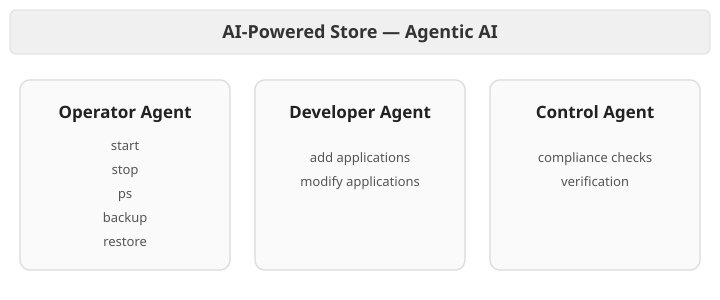
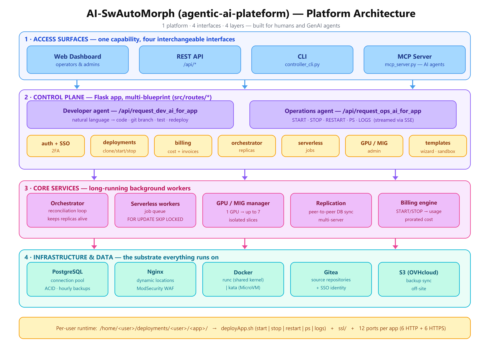
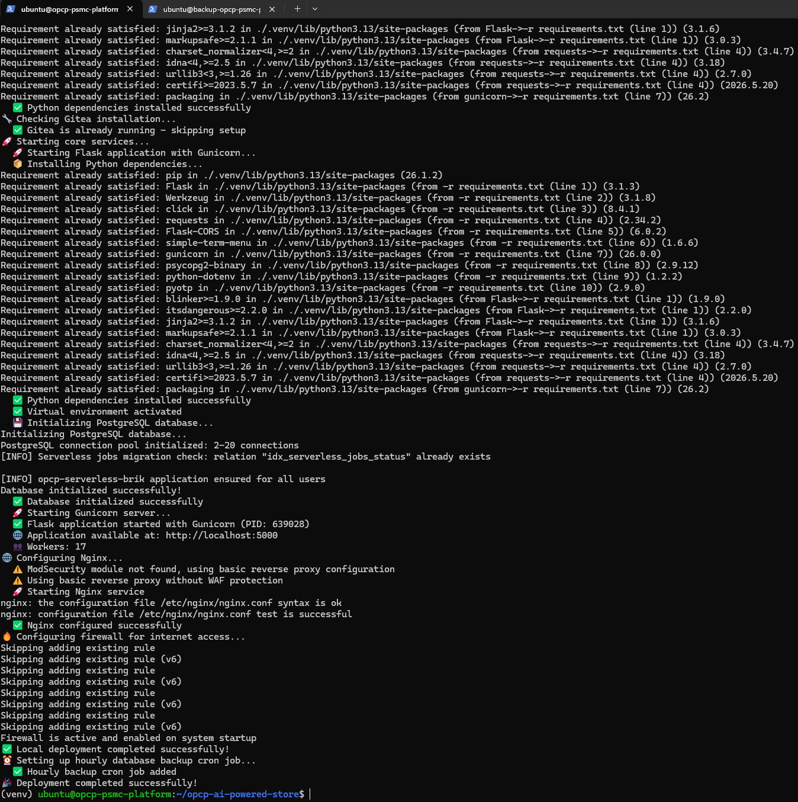

Installation sur Ubuntu Bare-Metal avec l'IA agentique
Apprenez � d�ployer la plateforme Agentic-AI-Platform sur un serveur Ubuntu bare-metal vierge (22.04 ou 24.04 LTS). Ce guide couvre l'ensemble du processus d'installation, de la pr�paration du syst�me au d�ploiement final.


Pr�requis
- Une installation Ubuntu 22.04 ou 24.04 LTS propre
- Acc�s root ou sudo
- Au moins 4 Go de RAM et 20 Go d'espace disque
- Connectivit� Internet pour le t�l�chargement des paquets
- Un GPU NVIDIA compatible (optionnel, pour le support MIG)
Installation rapide
Le moyen le plus rapide de d�ployer la plateforme est le script automatis� init_pltf.sh, qui ex�cute pour vous chaque �tape de ce guide et met en place le plan de contr�le (control plane) de la plateforme Agentic AI.

O� trouver init_pltf.sh
Le script init_pltf.sh qui installe le plan de contr�le de la plateforme Agentic AI est h�berg� dans le d�p�t d�di� de la plateforme sur GitHub : github.com/Sam9682/agentic-ai-plateform. Il se trouve � la racine de ce d�p�t, vous l'obtenez donc d�s le clonage :
git clone https://github.com/Sam9682/agentic-ai-plateform.git
cd agentic-ai-plateform
# init_pltf.sh se trouve ici, � la racine du d�p�t :
ls -l init_pltf.sh./ depuis le r�pertoire clon�.
D�ploiement interactif (recommand�)
# Initialise un serveur vierge. init_pltf.sh demande l'identit� de la
# plateforme (slug du dossier, nom affich�, URL du d�p�t et URL du
# sous-module partag�) et �crit PLTF_NAME / PLTF_FOLDER dans conf/deploy.ini.
# Appuyez sur Entr�e pour accepter les valeurs par d�faut affich�es, ou
# pr�-d�finissez les valeurs via des variables d'environnement pour une
# ex�cution non interactive :
# PLTF_FOLDER=my-platform PLTF_NAME="My Platform" \
# REPO_URL=https://github.com/your-org/your-repo.git ./init_pltf.sh
chmod +x init_pltf.sh
./init_pltf.shVous pr�f�rez comprendre chaque �tape ou devez personnaliser l'installation ? D�veloppez l'installation manuelle ci-dessous.
Installation manuelle (optionnelle)
Voici les �tapes individuelles ex�cut�es par le script automatis�. Suivez-les uniquement si vous souhaitez une installation pas � pas ou devez personnaliser le processus.
�tape 1 : Installation des d�pendances syst�me
Commencez par mettre � jour les paquets et installer les d�pendances n�cessaires :
sudo apt update
sudo apt --fix-broken install -y
sudo apt install -y python3 python3-pip python3-venv net-tools unzip�tape 2 : Installation des outils CLI
Installez les outils en ligne de commande n�cessaires � la gestion de la plateforme :
OVH CLI (shai)
curl -fsSL https://raw.githubusercontent.com/ovh/shai/main/install.sh | sh
echo 'export PATH="~/.local/bin:$PATH"' >> ~/.bashrcAWS CLI
curl -s "https://awscli.amazonaws.com/awscli-exe-linux-x86_64.zip" -o "awscliv2.zip"
unzip -q awscliv2.zip
sudo ./aws/install
rm -rf aws awscliv2.zipTerraform
curl -s "https://releases.hashicorp.com/terraform/1.14.5/terraform_1.14.5_linux_amd64.zip" -o "terraform.zip"
unzip -q terraform.zip
sudo mv terraform /usr/local/bin/
rm -f terraform.zip�tape 3 : Configuration r�seau (Netplan)
Le script configure automatiquement les priorit�s des interfaces r�seau pour assurer que l'interface publique est pr�f�r�e pour le routage par d�faut :
- Interface publique : m�trique de route
50(priorit� haute) - Interface priv�e : m�trique de route
200(priorit� basse)
La d�tection des interfaces se fait automatiquement en analysant les adresses IP (plages priv�es : 10.x, 172.16-31.x, 192.168.x).
�tape 4 : Installation de Docker
Docker est install� via le script officiel, avec docker-compose en compl�ment :
curl -fsSL https://get.docker.com -o get-docker.sh
sudo sh get-docker.sh
sudo usermod -aG docker $USER
sudo curl -sL "https://github.com/docker/compose/releases/latest/download/docker-compose-$(uname -s)-$(uname -m)" -o /usr/local/bin/docker-compose
sudo chmod +x /usr/local/bin/docker-compose
rm -f get-docker.shdocker prenne effet.
�tape 5 : Installation des pilotes NVIDIA et support GPU (optionnel)
Si votre serveur dispose d'un GPU NVIDIA compatible :
# Installation des pilotes NVIDIA
sudo apt install -y nvidia-driver-550 nvidia-utils-550
# Activation du mode MIG (Multi-Instance GPU)
sudo nvidia-smi -mig 1
# Installation du NVIDIA Container Toolkit
sudo apt install -y nvidia-container-toolkit
# V�rification de l'acc�s Docker au GPU
docker run --rm --gpus '"device=0"' nvidia/cuda:12.3.0-base-ubuntu22.04 nvidia-smi�tape 6 : Configuration AWS (stockage S3 OVH)
Configurez les identifiants AWS pour la synchronisation S3 avec OVH Object Storage :
mkdir -p ~/.aws
# Fichier ~/.aws/config
cat > ~/.aws/config <<EOF
[profile OVH-SWAUTOMORPH]
region = gra
output = json
EOF
# Fichier ~/.aws/credentials
cat > ~/.aws/credentials <<EOF
[OVH-SWAUTOMORPH]
aws_access_key_id = VOTRE_ACCESS_KEY
aws_secret_access_key = VOTRE_SECRET_KEY
endpoint_url = https://s3.gra.io.cloud.ovh.net/
signature_version = s3v4
EOF
# Variables d'environnement
export AWS_DEFAULT_PROFILE=OVH-SWAUTOMORPH
export AWS_ENDPOINT_URL_S3=https://s3.gra.io.cloud.ovh.net/�tape 7 : Clonage du d�p�t
Clonez le d�p�t principal avec ses sous-modules :
git clone https://github.com/Sam9682/opcp-agentic-ai-labs.git
cd opcp-agentic-ai-labs
git submodule update --init --recursive�tape 8 : Configuration de l'environnement Python
Cr�ez un environnement virtuel et installez les d�pendances :
python3 -m venv .venv
source .venv/bin/activate
pip install -r requirements.txt�tape 9 : Configuration finale
Pr�parez l'arborescence de d�ploiement :
mkdir -p logs
chmod +x setup_modsecurity_config.sh
cd ~
mkdir -p deployments/adminActions post-installation
- Modifier
./conf/deploy.iniavec vos param�tres de plateforme, notamment les valeursPLTF_NAMEetDOMAIN - Ajouter le certificat SSL dans
~/opcp-agentic-ai-labs/ssl/fullchain_domain.crtpour le HTTPS nginx - Ajouter la cl� priv�e SSL dans
~/opcp-agentic-ai-labs/ssl/privateKey_domain.keypour le HTTPS nginx - Renseigner
aws_access_key_idetaws_secret_access_keydans~/.aws/credentialspour la synchronisation S3
Exercices
Cette le�on comprend des exercices pratiques en laboratoire. Compl�tez chaque �tape et validez votre progression.